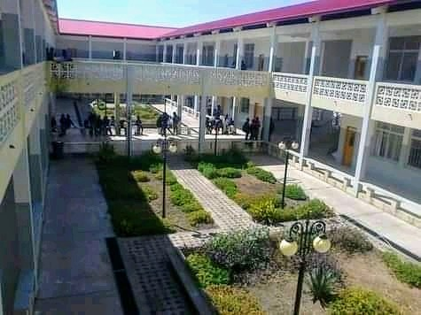

O IPAG é o instituto médio de administração e gestão nacional, tem sua sede na província de "xxxxx". Possui actual "x" institutos espalhados pelo território nacional. Forma anulamente em média "x" alunos, dos quais "x" na área de administração e "x" na área de gestão. Seu corpo executivo é constituido por: "Ezequiel João","" e "xxxxxxxx".
- 
História
O IPAG - Instituto Politécnico de Administração e Gestão foi criado em "xx/xx/xxxx" na província de "xxxxxx".
Mais tarde foi se extendo pelo nosso território, chegando a varias outras províncias, tornando-se assim o instituto nacional médio de administração e gestão de Angola.
O IPAG do Dango
foi inaugurado em 2009/11/11 por
Sua ex. Sr. primeiro ministro engenheiro Paulo Kassoma